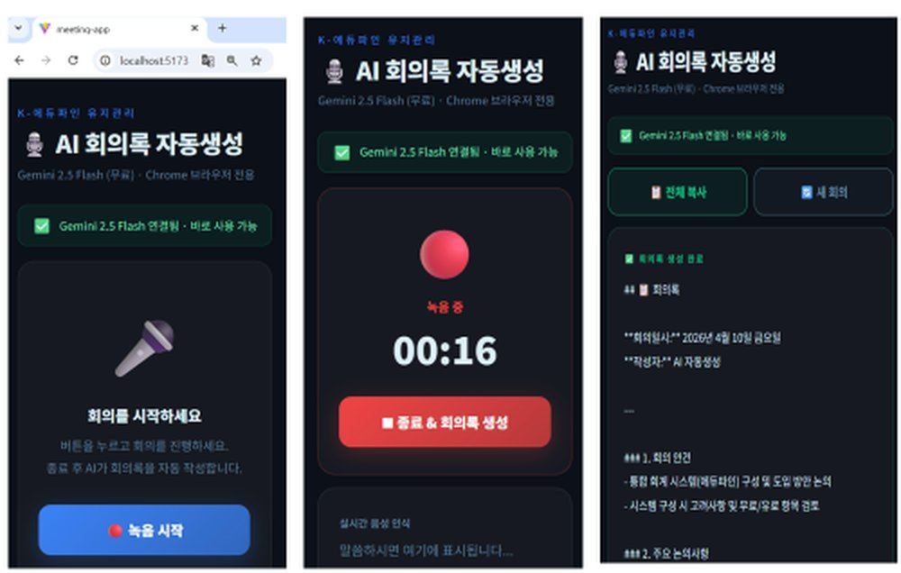
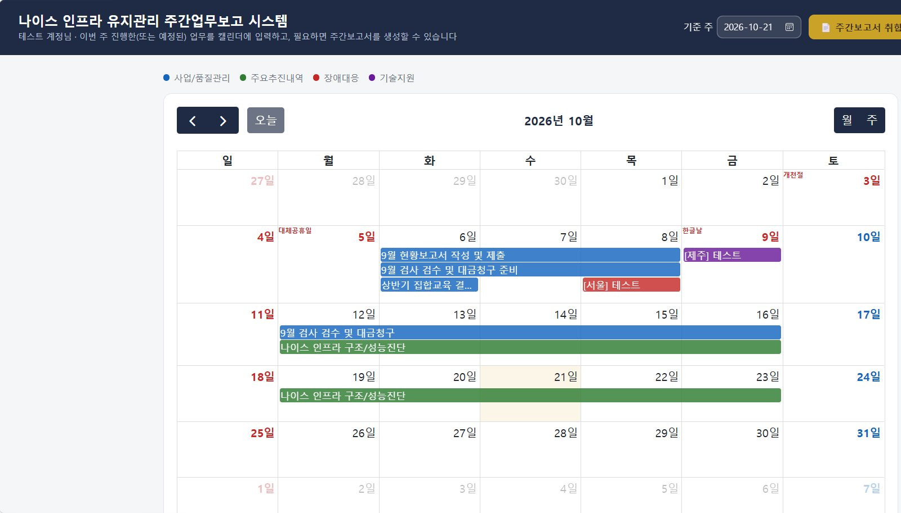
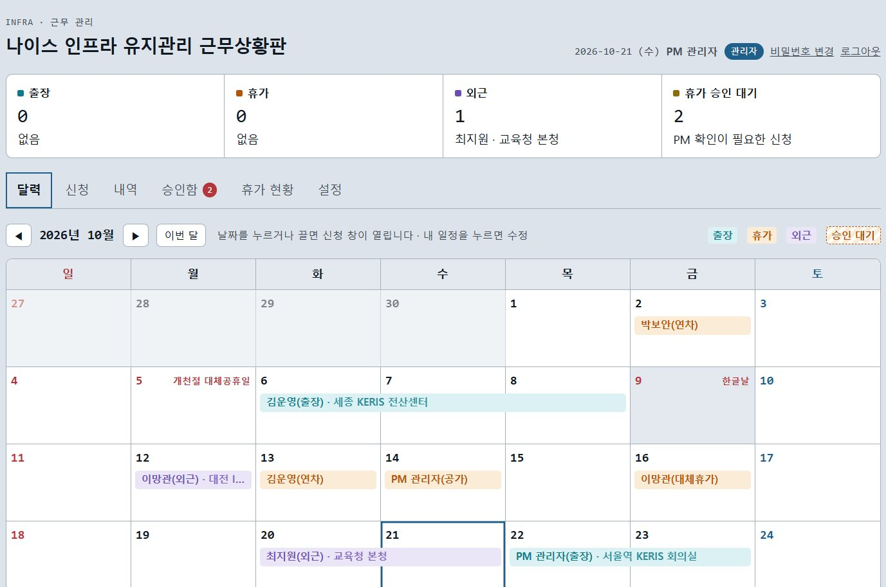

나이스·K-에듀파인 프로젝트의 ACE들이 모여, AI로 현업의 비효율을 직접 해결하는 학습조직입니다.
AIES는 'AI Education System'의 약자로, 교육사업부 핵심 시스템인 나이스와 K-에듀파인 사업의 ACE들이 모인 조직입니다. AX(AI Transformation) 시대의 업무 자동화는 선택이 아닌 필수이며, 현업에 대한 이해와 AI 전환 능력이 함께 있어야 실제 자동화가 가능하다는 문제의식에서 출발했습니다.
나이스·K-에듀파인 프로젝트의 핵심 인력이 모여 AI 기술을 현업에 접목하는 사내 학습조직입니다.
현업의 비효율을 해결하고 프로젝트 생산성을 높이는 실질적인 프로그램을 직접 개발합니다.
AX 시대의 업무 자동화는 선택이 아닌 필수. 현업 이해와 AI 전환 능력을 함께 갖춘 인재를 키웁니다.
NEIS·K-에듀파인 인프라 프로젝트에 Claude Code를 활용한 AI Transfer를 선도하는 ACE를 육성합니다.
현재 개발 중인 프로그램은 5가지입니다.
회의 내용을 녹음하면 자동으로 요약·정리
캘린더에 업무만 입력하면 주간보고서를 취합·생성
출장·휴가·외근 신청과 PM 승인, 잔여 연차를 한 화면에서 관리
장애 이력을 분석해 보고서 초안 생성
폐쇄망 환경에서 코드·쿼리 검증 지원
자문 2명, 기획 3명, 개발 3명으로 구성했습니다. 다수의 참여보다 실제 학습 활동에 필요한 인원 중심으로 꾸렸고, 단순 학습보다 소속 프로젝트에 바로 활용할 수 있는 실질적인 운영계획으로 진행하고 있습니다.
프로그램 개발 기간: 2026년 6월 ~ 8월
두 사업단은 지하철로 한 정거장 떨어져 있습니다. 이 물리적 거리를 넘어 진척 상황을 공유하고, 실질적인 개발 협업이 가능하도록 두 가지 도구를 씁니다.
현재 5가지 프로그램을 실제로 개발하고 있습니다. 아래에서 각 프로젝트를 자세히 살펴볼 수 있습니다.

정기보고 회의를 수기나 노트북으로 기록하다 보니 놓치는 내용이 많고, 회의 자체에 집중하기 어려웠습니다.
프로젝트 업무 효율성이 증대되고, 회의 중 놓치는 내용 없이 온전히 논의에 집중할 수 있습니다.

주간·월간 보고는 템플릿에 기간별 데이터만 바뀌는 구조라, 자동화 여지가 큽니다.
나이스 인프라 유지관리 사업에 적용해, 매주 반복되던 주간업무보고서 작성을 자동화하고 있습니다. 폐쇄망 서버에 설치해 쓸 수 있도록 배포합니다.

출장·휴가·외근을 메신저와 엑셀로 따로 관리하다 보니 팀 전체 현황과 남은 연차를 바로 확인하기 어려웠습니다.
K-에듀파인 물적기반·나이스 인프라 유지관리 프로젝트에 맞춰 개발했고, 인터넷 없이 Python만으로 동작하는 폐쇄망 서버 버전으로 배포합니다.
시스템 복잡도가 커지고 보안·규제가 강화되면서, 폐쇄망 환경의 개발 난이도가 높아지고 있습니다.
반복 코드 작성 시간이 줄어 개발 속도가 오르고, 주니어 개발자도 시니어급 코딩 컨벤션을 적용할 수 있습니다.
행안부 일일점검 스크립트 적용 요청이 있었고, 주요 파일시스템(/edulog, /edusys)이 사용률 100%로 서비스가 중단되는 상황이 있었습니다.
매일 특정 시점 사용률을 점검해 임계치 도달 시 불필요 파일을 자동 삭제합니다. (인천교육청 적용)
17개 시도교육청에 확대 적용해, 반복적인 점검과 로그 관리를 자동화하고 있습니다.
복잡한 문법을 몰라도, 업무 로직을 가장 잘 아는 사람이 AI를 활용해 직접 고품질 프로그램을 구현하는 시대가 되었습니다.
여러분의 현장 전문성에 AI라는 날개를 달아, ITCEN 그룹의 학습조직에서 "기획이 곧 개발"이 되는 성과를 직접 만들어 보시기 바랍니다.
"기술은 현장의 문제를 해결할 때 비로소 가치를 지닙니다. 학습조직이 지식을 나누는 수준을 넘어, 현장에 즉시 적용 가능한 실질적인 성과를 낼 수 있도록 기술적 지원과 노력을 아끼지 않겠습니다."